器材库 > 35mm画幅可换镜头数码相机 > EOS 5D Mark III
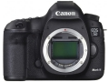
规格总览
产品类型
35mm画幅可换镜头数码相机
发布日期
2012-03-02
影像规格
影像传感器
CMOS
影像传感器尺寸
36×24mm
有效像素
2230万
影像处理器
DIGIC 5+
最大解像度
5760×3840
静态图像尺寸
5760×3840, 3840×2560, 2880×1920, 1920×1280, 720×480
静态图像格式
JPEG, RAW, RAW+JPEG
画幅比
3:2
短片尺寸
1920×1080@30p/25p/24p, 1280×720@60p/50p, 640×480@30p/25p
短片格式
MPEG4-AVC/H.264
除尘系统
自动、手动、添加除尘数据
镜头和对焦
镜头卡口
Canon EF
兼容镜头
佳能EF镜头（EF-S镜头除外）
对焦系统类型
TTL辅助影像重合，相位检测
对焦点
61点（最多41个十字型对焦点）
对焦模式
单次自动对焦、人工智能伺服自动对焦、人工智能自动对焦、手动对焦
自动对焦点选择
自动, 手动
手动对焦
支持
曝光控制
测光系统
63区TTL全开光圈测光
测光模式
中央重点测光, 多分区评价测光, 点测光, 局部测光
测光范围
1EV~20EV
曝光模式
P（程序自动曝光）, B门, A（光圈优先自动曝光）, S（快门速度优先自动曝光）, M（手动测光曝光）
快门类型
电子控制焦平面快门
快门速度
1/8000 - 30秒、B门
曝光补偿
±5EV以1/3或1/2EV级调整
自动曝光锁
有
自动包围曝光
在±3级间以1/3或1/2级为单位调节 （可与手动曝光补偿组合使用）
ISO感光度
智能ISO, 自动ISO、ISO 100 - 25600（以1/3级或整级为单位）、或ISO感光度扩展到L（相当于ISO 50）、H1 （相当于ISO 51200）、H2 （相当于ISO 102400）
白平衡
日光, 闪光灯, 色温调节, 阴天, 荧光灯, 自定义, 阴影, 自动, 钨丝灯, 白平衡包围
自拍
10秒, 2秒
连拍
高速连拍：6张/秒 / 低速连拍：3张/秒 / 静音连拍：3张/秒
闪光灯
闪光模式
E-TTL II
闪光补偿
±3EV以1/3或1/2EV级调整
外接闪光灯
EX系列闪光灯
PC端子
有
取景器/显示屏
取景器
眼平五棱取景器
取景范围
100%
取景放大倍率
0.71倍
屈光度调节范围
约-3.0 - +1.0 m--1（dpt）
反光镜
快速瞬回半透明
景深预视
有
LCD类型
彩色TFT LCD
LCD尺寸
3.2英寸
LCD像素
104万
亮度调节级数
7
Live View
有
Live View 对焦模式
实时模式、面部优先实时模式（反差检测）、 快速模式（相差检测）、手动对焦（能放大约5倍/10倍）
文件输入/输出
存储卡
CF, SD/SDHC, SDXC
数据接口
高速USB
视频/音频接口
MIC 输入, Video 输出 (NTSC/PAL), HDMI Mini 输出
支持打印协议
PictBridge
电源
电池
电池LP-E6 （一节）
续航能力
取景器拍摄：23℃时约950张、0℃时约850张；实时显示拍摄：23℃时约200张、0℃时约180张；短片拍摄：23℃时约1小时30分钟、0℃时约1小时20分钟
外接电源
交流电适配器套装ACK-E6
机身规格
材质
镁合金机身
颜色
黑色
尺寸
152.0×116.4×76.4mm
重量
仅机身：860g
其它
用户自选功能
13种
配件端口
遥控线, 耳机
工作温度
0-40℃
工作湿度
不高于85%
附件
EOS数码解决方案光盘, 软件使用说明书光盘, 电源线, 电池充电器LC-E6E, 锂电池LP-E6, USB线IFC-200U, 立体声视频连接线AVC-DC400ST, 相机背带EW-EOS5DMKIII
软件
Digital Photo Professional, EOS Utility
kaising2018-01-03 11:384.75 分
操作性 4.50功能性 5.00美观性 4.50趣味性 5.00耐用性 4.50性价比 5.00解像力 4.50色彩还原 5.00
神叼瞎捋2017-05-17 20:185 分
操作性 5.00功能性 5.00美观性 5.00趣味性 5.00耐用性 5.00性价比 5.00解像力 5.00色彩还原 5.00
hpux2017-01-15 13:414.69 分
操作性 5.00功能性 4.50美观性 5.00趣味性 5.00耐用性 5.00性价比 4.50解像力 4.00色彩还原 4.50
一棵草籽2016-11-28 11:394.5 分
操作性 4.50功能性 4.50美观性 4.50趣味性 5.00耐用性 4.00性价比 5.00解像力 4.50色彩还原 4.00
caihuangsitong2015-08-24 20:234.5 分
操作性 5.00功能性 5.00美观性 5.00趣味性 3.50耐用性 5.00性价比 4.00解像力 4.00色彩还原 4.50
cybertron2015-08-01 01:384.44 分
操作性 4.50功能性 4.50美观性 4.50趣味性 4.50耐用性 4.50性价比 4.00解像力 4.50色彩还原 4.50
颓废的十年2015-06-01 16:365 分
操作性 5.00功能性 5.00美观性 5.00趣味性 5.00耐用性 5.00性价比 5.00解像力 5.00色彩还原 5.00
kintaichi2015-04-19 14:284.63 分
操作性 5.00功能性 4.50美观性 5.00趣味性 5.00耐用性 4.50性价比 4.00解像力 4.50色彩还原 4.50
雅客2015-04-15 23:324.31 分
操作性 4.50功能性 4.50美观性 4.50趣味性 4.00耐用性 5.00性价比 3.50解像力 4.50色彩还原 4.00
孤独猫神2015-04-15 12:284.69 分
操作性 5.00功能性 4.50美观性 4.50趣味性 4.50耐用性 5.00性价比 4.50解像力 4.50色彩还原 5.00
没人用吧2014-09-07 09:494.88 分
操作性 5.00功能性 5.00美观性 5.00趣味性 5.00耐用性 5.00性价比 4.00解像力 5.00色彩还原 5.00
幽煌紫电2014-09-07 03:330.5 分
操作性 0.50功能性 0.50美观性 0.50趣味性 0.50耐用性 0.50性价比 0.50解像力 0.50色彩还原 0.50
石头书生2014-08-29 13:030.5 分
操作性 0.50功能性 0.50美观性 0.50趣味性 0.50耐用性 0.50性价比 0.50解像力 0.50色彩还原 0.50
DGQAY2014-08-25 20:020.5 分
操作性 0.50功能性 0.50美观性 0.50趣味性 0.50耐用性 0.50性价比 0.50解像力 0.50色彩还原 0.50
深拓澜2014-08-25 03:150.5 分
操作性 0.50功能性 0.50美观性 0.50趣味性 0.50耐用性 0.50性价比 0.50解像力 0.50色彩还原 0.50
昊子蕾子2014-08-19 00:014.88 分
操作性 5.00功能性 4.50美观性 5.00趣味性 5.00耐用性 5.00性价比 4.50解像力 5.00色彩还原 5.00
京AF50182014-08-03 19:294.19 分
操作性 4.50功能性 4.50美观性 4.00趣味性 4.50耐用性 4.00性价比 4.00解像力 4.00色彩还原 4.00
哈斯2014-07-31 20:424.5 分
操作性 4.50功能性 4.50美观性 4.50趣味性 4.50耐用性 4.50性价比 4.50解像力 4.00色彩还原 5.00
云飞豹2014-07-17 20:503.75 分
操作性 4.00功能性 4.00美观性 4.00趣味性 4.00耐用性 4.00性价比 2.00解像力 4.00色彩还原 4.00
dedtiga2014-07-08 23:074.69 分
操作性 5.00功能性 5.00美观性 4.50趣味性 4.00耐用性 5.00性价比 4.00解像力 5.00色彩还原 5.00
哈斯2014-06-22 22:53
wingszero2014-06-09 02:154.5 分
操作性 5.00功能性 5.00美观性 4.50趣味性 5.00耐用性 5.00性价比 3.00解像力 4.00色彩还原 4.50
神奇老猫2014-05-19 09:474.81 分
操作性 5.00功能性 4.50美观性 5.00趣味性 5.00耐用性 5.00性价比 4.00解像力 5.00色彩还原 5.00
cym21020012014-02-24 15:574.63 分
操作性 4.50功能性 5.00美观性 5.00趣味性 5.00耐用性 4.50性价比 4.00解像力 4.50色彩还原 4.50
北方郎2014-02-24 12:114.81 分
操作性 5.00功能性 5.00美观性 5.00趣味性 4.50耐用性 5.00性价比 4.50解像力 4.50色彩还原 5.00
wwwunix2014-02-11 10:164.88 分
操作性 5.00功能性 4.50美观性 5.00趣味性 5.00耐用性 5.00性价比 4.50解像力 5.00色彩还原 5.00
chibang2014-02-06 17:495 分
操作性 5.00功能性 5.00美观性 5.00趣味性 5.00耐用性 5.00性价比 5.00解像力 5.00色彩还原 5.00
暗流2014-01-29 20:054.88 分
操作性 4.50功能性 5.00美观性 5.00趣味性 4.50耐用性 5.00性价比 5.00解像力 5.00色彩还原 5.00
NiCC2014-01-23 14:585 分
操作性 5.00功能性 5.00美观性 5.00趣味性 5.00耐用性 5.00性价比 5.00解像力 5.00色彩还原 5.00
zsthou2014-01-09 11:095 分
操作性 5.00功能性 5.00美观性 5.00趣味性 5.00耐用性 5.00性价比 5.00解像力 5.00色彩还原 5.00
elliotliu2014-01-09 05:494.94 分
操作性 5.00功能性 5.00美观性 5.00趣味性 4.50耐用性 5.00性价比 5.00解像力 5.00色彩还原 5.00
北方郎2013-12-13 11:12
alexyangyb2013-12-12 12:494.63 分
操作性 5.00功能性 5.00美观性 4.50趣味性 4.50耐用性 5.00性价比 4.00解像力 4.50色彩还原 4.50
海啸20042013-11-12 17:334.94 分
操作性 5.00功能性 5.00美观性 5.00趣味性 5.00耐用性 5.00性价比 4.50解像力 5.00色彩还原 5.00
equinoxmint2013-08-31 21:26
zhxu2013-08-31 14:484.69 分
操作性 5.00功能性 5.00美观性 5.00趣味性 5.00耐用性 4.50性价比 4.00解像力 4.50色彩还原 4.50
大个子老王2013-08-16 16:343.56 分
操作性 3.00功能性 4.00美观性 4.00趣味性 4.00耐用性 3.00性价比 3.00解像力 3.00色彩还原 4.50
chin72013-07-31 20:054.94 分
操作性 5.00功能性 5.00美观性 5.00趣味性 5.00耐用性 5.00性价比 4.50解像力 5.00色彩还原 5.00
wingszero2013-07-27 13:24
光色流年2013-07-04 09:034.88 分
操作性 4.50功能性 5.00美观性 5.00趣味性 5.00耐用性 5.00性价比 4.50解像力 5.00色彩还原 5.00
zyb0032013-06-02 17:364.31 分
操作性 5.00功能性 4.00美观性 5.00趣味性 3.50耐用性 3.00性价比 4.00解像力 5.00色彩还原 5.00
coldlarry2013-05-19 14:074.69 分
操作性 4.50功能性 5.00美观性 5.00趣味性 4.00耐用性 5.00性价比 4.00解像力 5.00色彩还原 5.00
alexyangyb2013-05-13 15:40
天岚2013-05-10 16:513.38 分
操作性 4.00功能性 4.00美观性 4.00趣味性 3.00耐用性 4.00性价比 0.50解像力 3.50色彩还原 4.00
Josephe222013-04-15 20:164.44 分
操作性 4.50功能性 4.50美观性 5.00趣味性 4.50耐用性 5.00性价比 3.00解像力 4.50色彩还原 4.50
thinker292013-04-08 11:184.56 分
操作性 5.00功能性 5.00美观性 5.00趣味性 4.50耐用性 4.50性价比 3.50解像力 4.50色彩还原 4.50
astrozhx2013-04-06 08:174.25 分
操作性 3.50功能性 4.50美观性 4.50趣味性 4.50耐用性 4.00性价比 4.00解像力 4.50色彩还原 4.50
astrozhx2013-04-06 07:57
generalstar2013-03-29 13:004.75 分
操作性 4.50功能性 5.00美观性 4.50趣味性 5.00耐用性 4.50性价比 4.50解像力 5.00色彩还原 5.00
eos_yu2013-03-26 02:324.75 分
操作性 5.00功能性 3.50美观性 5.00趣味性 5.00耐用性 5.00性价比 4.50解像力 5.00色彩还原 5.00
光影初见2013-03-13 21:394.94 分
操作性 5.00功能性 5.00美观性 4.50趣味性 5.00耐用性 5.00性价比 5.00解像力 5.00色彩还原 5.00
蓝七星2013-02-28 11:154.56 分
操作性 5.00功能性 5.00美观性 5.00趣味性 4.50耐用性 4.00性价比 4.00解像力 4.50色彩还原 4.50
lhy13663469222013-02-22 13:445 分
操作性 5.00功能性 5.00美观性 5.00趣味性 5.00耐用性 5.00性价比 5.00解像力 5.00色彩还原 5.00
hexin782013-02-18 17:104.88 分
操作性 5.00功能性 5.00美观性 5.00趣味性 5.00耐用性 5.00性价比 4.00解像力 5.00色彩还原 5.00
行摄从容2013-02-11 15:264.75 分
操作性 5.00功能性 5.00美观性 5.00趣味性 4.50耐用性 5.00性价比 4.00解像力 4.50色彩还原 5.00
彭震宇2013-02-07 11:284.81 分
操作性 5.00功能性 4.50美观性 5.00趣味性 5.00耐用性 4.50性价比 4.50解像力 5.00色彩还原 5.00
紫葳2013-01-28 15:284.88 分
操作性 5.00功能性 5.00美观性 4.50趣味性 5.00耐用性 5.00性价比 4.50解像力 5.00色彩还原 5.00
上善若水692013-01-15 15:164.56 分
操作性 4.50功能性 5.00美观性 4.50趣味性 4.50耐用性 4.50性价比 4.50解像力 4.50色彩还原 4.50
公摄摄员2013-01-14 17:574.38 分
操作性 4.50功能性 4.50美观性 5.00趣味性 5.00耐用性 5.00性价比 3.00解像力 4.50色彩还原 3.50
乡村居士2013-01-13 22:414.88 分
操作性 4.50功能性 5.00美观性 5.00趣味性 5.00耐用性 5.00性价比 4.50解像力 5.00色彩还原 5.00
5DmarkV2013-01-12 14:11
紫葳2013-01-11 21:13
bhxs2013-01-10 10:594.5 分
操作性 5.00功能性 5.00美观性 5.00趣味性 5.00耐用性 5.00性价比 3.00解像力 5.00色彩还原 3.00
随风过客2013-01-09 22:334.88 分
操作性 5.00功能性 5.00美观性 5.00趣味性 5.00耐用性 5.00性价比 4.00解像力 5.00色彩还原 5.00
福建老邱2013-01-09 20:465 分
操作性 5.00功能性 5.00美观性 5.00趣味性 5.00耐用性 5.00性价比 5.00解像力 5.00色彩还原 5.00
athlon5122013-01-09 14:424.06 分
操作性 4.50功能性 4.00美观性 4.00趣味性 4.00耐用性 4.50性价比 3.00解像力 4.50色彩还原 4.00
alexyangyb2013-01-09 11:03
amazon970192013-01-09 10:374.63 分
操作性 4.50功能性 4.00美观性 5.00趣味性 4.50耐用性 5.00性价比 4.00解像力 5.00色彩还原 5.00
wuyer2012-03-02 21:544.81 分
操作性 5.00功能性 5.00美观性 5.00趣味性 5.00耐用性 4.50性价比 4.50解像力 4.50色彩还原 5.00
fishhhh2012-03-02 17:433 分
操作性 3.00功能性 3.00美观性 3.00趣味性 3.00耐用性 3.00性价比 3.00解像力 3.00色彩还原 3.00
望云出神2012-03-02 17:024.75 分
操作性 4.50功能性 5.00美观性 5.00趣味性 5.00耐用性 5.00性价比 3.50解像力 5.00色彩还原 5.00
jinshengf15e2012-03-02 16:424.56 分
操作性 4.50功能性 5.00美观性 5.00趣味性 4.50耐用性 5.00性价比 3.50解像力 4.50色彩还原 4.50
产品图 / 样片
EOS 5D Mark III
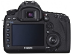
EOS 5D Mark III
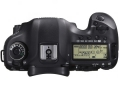
EOS 5D Mark III
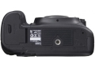
EOS 5D Mark III
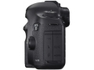
EOS 5D Mark III
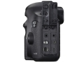
EOS 5D Mark III
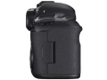
EOS 5D Mark III
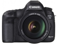
EOS 5D Mark III
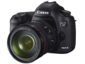
EOS 5D Mark III
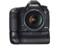
EOS 5D Mark III
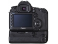
EOS 5D Mark III
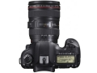
EOS 5D Mark III
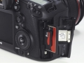
EOS 5D Mark III
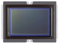
EOS 5D Mark III
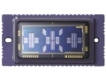
EOS 5D Mark III
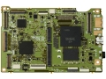
EOS 5D Mark III
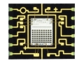
EOS 5D Mark III
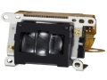
EOS 5D Mark III
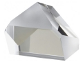
EOS 5D Mark III
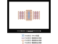
EOS 5D Mark III
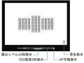
EOS 5D Mark III
EOS 5D Mark III
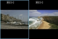
EOS 5D Mark III
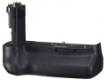
EOS 5D Mark III
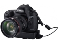
EOS 5D Mark III
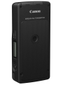
EOS 5D Mark III
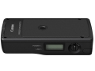
EOS 5D Mark III
评测 / 相关文章
- 详细内容 （存档）
- 为高画质而生：佳能EOS 5D MARK III评测 （存档）
- ［试用］只求最美一刻 佳能5D3行摄琥珀王国 （存档）
- ［试用］踏踏实实用佳能照相机照相 （存档）
- ［试用］5DIII+副厂头，迷醉花间 （存档）
- ［试用］漫漫器材发烧路，纯器材派点评11只佳能镜头 （存档）
- ［试用］带着EOS 5D Mark III去勃朗峰 （存档）
- ［试用］5D Mark Ⅲ和N年的自选辑 （存档）
- ［试用］各种wifi SD卡在5D Mark III的使用感受 （存档）
- ［试用］DIY打造5D3专属WIFI手柄 （存档）
- ［行情］佳能 5D MARK III 套机直降送好礼！ （存档）
- ［资讯］高感强悍白炮轻 展现EOS的实力 （存档）
相关文章
- ［试用］只求最美一刻 佳能5D3行摄琥珀王国 （存档）
- ［试用］踏踏实实用佳能照相机照相 （存档）
- ［试用］5DIII+副厂头，迷醉花间 （存档）
- ［试用］漫漫器材发烧路，纯器材派点评11只佳能镜头 （存档）
- ［试用］带着EOS 5D Mark III去勃朗峰 （存档）
- ［试用］5D Mark Ⅲ和N年的自选辑 （存档）
- ［试用］各种wifi SD卡在5D Mark III的使用感受 （存档）
- ［试用］DIY打造5D3专属WIFI手柄 （存档）
- ［行情］佳能 5D MARK III 套机直降送好礼！ （存档）
- ［资讯］高感强悍白炮轻 展现EOS的实力 （存档）
- ［试用］宏村人像 佳能EOS 5D3中的古镇旗袍韵律 （原站已下线）
- ［影像］我的5D3人像摄影 （原站已下线）
- ［试用］你好色彩，5D3行摄光影 （原站已下线）
- ［试用］你好色彩，5D3行摄光影 （原站已下线）
- ［试用］我的EOS,我的旅途,我的家人 （原站已下线）
- ［影像］感受5D MARK III的色彩 （原站已下线）
- ［试用］与5D III一起，越过山和大海 （原站已下线）
- ［试用］佳能5D3记录日常 （原站已下线）
- ［资讯］佳能6D Mark II vs 5D Mark III （原站已下线）
- ［影像］EOS 5D Mark III的澳大利亚新西兰行摄之旅 （原站已下线）
- ［行情］佳能5D3拆机版最新低价 （原站已下线）